100 Basic Syntax
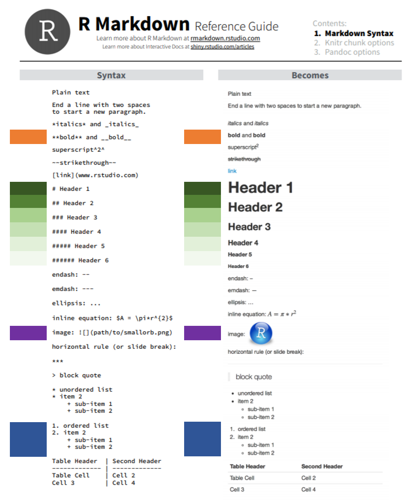
100.1 Heading Text
Heading text follows one or more hash-sign(s) (#). The number of hash-signs determines the hierarchy of headings. For example, “# Heading 1” would represent the primary heading, “## Heading 2” would represent the secondary heading, “### Heading 3” would represent the tertiary heading, and so forth.
100.2 Plain Text
Simply add text below the YAML header. To start a new paragraph, you will need to end your plain text line with two (2) spaces.
100.3 Bold and Italicized Text
There are two ways to format your text to be bold or italicized.
Bold
- Surround your text with two (2) asterisks (*) on each side.
- Surround your text with two (2) underscores (_) on each side.
Italicized
- Surround your text with one (1) asterisk (*) on each side.
- Surround your text with one (1) underscore (_) on each side.
The markdown syntax…
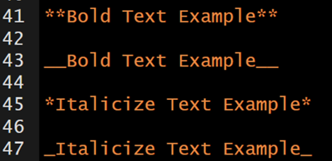
which renders to…
Bold Text Example
Bold Text Example
Italicize Text Example
Italicize Text Example
100.4 Lists
100.4.1 Unordered Lists
Unordered or bulleted lists can be generated by using a single asterisk (*) followed by a space and the plain text intended to represent the bullet. To add another bullet, just hit enter or return and follow the previous steps. To add sub-bullets, insert two spaces and a plus sign (+) followed by a space and the plain text intended to represent the sub-bullet. You can do this at multiple levels; meaning you can add four spaces and a plus sign (+) to insert a sub-sub-bullet and six spaces and a plus sign (+) to add a sub-sub-sub-bullet.
The markdown syntax…
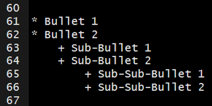
which renders to…
Bullet 1
Bullet 2
Sub-Bullet 1
Sub-Bullet 2
- Sub-Sub-Bullet 1
- Sub-Sub-Bullet 2
100.4.2 Ordered Lists
Follow the steps in Unordered Lists but instead of using asterisk (*) use sequential numbers followed by a period (.)– this cannot be done for sub-bullets. For example, “1.”, “2.”, and “3.”.
The markdown syntax…
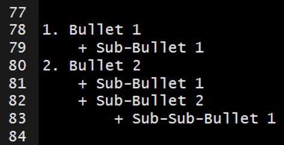
which renders to…
Bullet 1
- Sub-Bullet 1
Bullet 2
Sub-Bullet 1
Sub-Bullet 2
- Sub-Sub-Bullet 1
100.5 Link to a Section
You can link to a section within the document by surrounding the name of the section in square brackets.
The markdown syntax…
[Lesson 3: Basic Syntax]
would render to this…
[Lesson 3: Basic Syntax]
If you click on the “Lesson 3: Basic Syntax” above, it will jump you to the head of this section.
100.6 Hyperlink
You simply need to paste in a full URL into your document and it will automatically be recognized as a hyperlink. For example…
https://bookdown.org/yihui/rmarkdown
If you want to hide the full link and represent it with text, then surround the text with square brackets followed by the URL in parenthesis.
The markdown syntax…
[link](https://bookdown.org/yihui/rmarkdown/)
would render to this…
link.
100.7 Insert Images
You can insert images into your document using syntax similar to the hyperlink syntax above.
In the code below, you can see the file path the to the image. This image will render without a caption

You can add a caption for the image in between the square brackets.

You can control the size of the image like this…
{width=200px}
You can center the image with HTML like this…
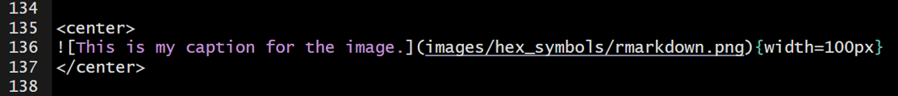
100.8 Tabbed Sections
Tabbed sections can be added to section of an HTML documents that will fold all of the subsequent sub-sections into separate tabs. To do this you specify a section header followed by {.tabset}. For example, ## My Section Header {.tabset}.
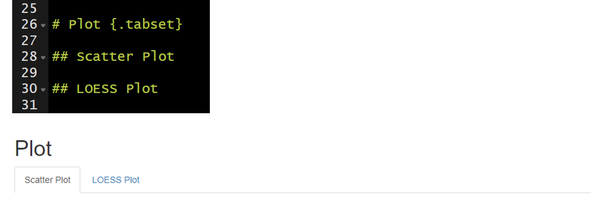
Note this feature is not available for use with bookdown.
100.9 Your Turn
Using the .Rmd file created in [Lesson 2: Rmd Creation], delete everything below the YAML header.
Add the following level-1 headers and knit the document.
- Introduction
- Workflow
- Import Data
- Preprocessing
- Study Area
- Plot
- Conclusions
Add two level-2 headers below the Plot header and knit the document.
- Scatter Plot
- LOESS Plot
Add plain text below the Introduction header and knit the document.
- Be sure to include some bold and italicized text.
- Explain the purpose of the document (e.g., “This document was created during the 2020 NABs R Markdown workshop and will serve as an example workflow for my future use of R Markdown.”)
- Include the hyperlink to R Markdown: The Definitive Guide (https://bookdown.org/yihui/rmarkdown/). This will be a helpful resource in the future.
Add unordered or ordered list below the Workflow header and knit the document.
- Describe the workflow we have talked about thus far (e.g., create an R project, add folders, create an rmarkdown document, knit the document to render).
- Add sub-bullets with helpful details.
Add the image provided with the data to the Introduction.
Make the Plot section tabbed section with
{.tabset}.
100.10 Lesson 4: YAML Headers
YAML: YAML Ain’t Markup Language
A YAML header contains YAML arguments, such as “title”, “author”, and “output”, demarcated by three dashes (—) on either end.
100.10.1 Title
The specified title (title: "My Title") will appear at the head of the document with a larger font size than the rest of the document.
100.10.3 Date
You can supply a date (date: “2026-02-03”) that will be added to the head of the document. You can specify a static date (date: "March 3rd, 2020") or a dynamic date (see image below) that will update each time you knit (render) the document– we will discuss this further in a subsequent section.
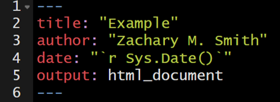
100.12 Themes
You can modify the YAML to specify the .theme of the document, which will change document styling (e.g., font type, color, size)
The following link provides examples of some of the available R Markdown themes: https://www.datadreaming.org/post/r-markdown-theme-gallery/
100.13 Code Folding
Code folding refers to the HTML YAML option to hide code chunks by default, but enable the reader to click a button to show the underlying code chunk.

100.14 output
The output option allows you to specify the type of document you want to create. This will be auto-populated if you generate the .Rmd file in RStudio by creating a new R Markdown file through the toolbar. You can manually modify the output type, but you must specify valid arguments.
Some valid arguments include:
html_documenthtml_notebookpdf_documentword_document
You can click on the small triangle to the right of the Knit button to view a drop-down menu of knitting options. Here you have the option to update the document type you want to knit (examples listed below).
- Knit to HTML
- Knit to PDF
- Knit to Word
By clicking one of these options, your YAML header updates automatically. You can have multiple document types render at once (e.g., a separate HTML and Word document are created with each knit call).
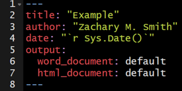
100.15 Custom Template
You have the ability to specify custom templates in your YAML header.
I have only used this feature for Microsoft Word documents. I created a new document within Microsoft Word and selected all of the formatting options I wanted for my document. I then added the template to the YAML header of my R Markdown document to specify that when the document is knit (rendered) to apply the formatting specifications found in the template Microsoft Word document.
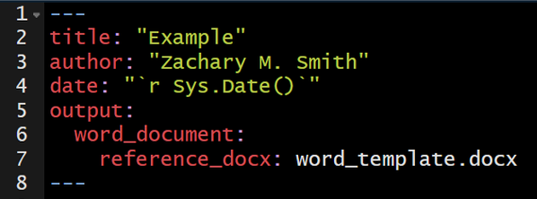
100.16 ymlthis
ymlthis is an R package intended to make it easier for you to generate YAML headers. The package also includes an interactive addin that provides an intuitive user-interface for generating YAML headers. You can visit the following link to learn more about how to use ymlthis: []https://ymlthis.r-lib.org/
Addins can be accessed by navigating to “Tools” in the RStudio banner, scrolling down to “Addins”, and selecting “Browse Addins.” A pop-up window will appear. If you have ymlthis installed on your machine, you will see the ymlthis addin in the pop-up window table. Once you select the ymlthis addin, you will see a pop-up window like this…
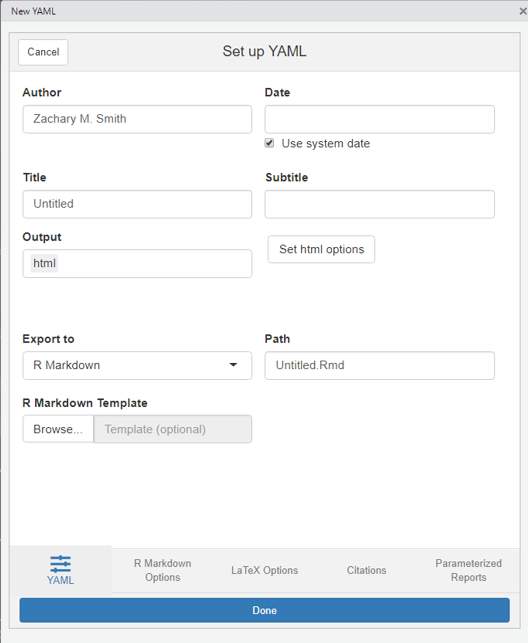
100.17 Your Turn
Edit the YAML title and author and knit the document.
Specify in the YAML that you want to include a table of contents and knit the document.
Specify in the YAML that you want a floating table of contents and knit the document.
Specify in the YAML that you want to change the theme to “journal” and knit the document.
If you have Microsoft Word installed on your computer, change the YAML output to
word_documentand the knit the document.Bonus: If you finish early, install ymlthis (
install.packages("ymlthis")), navigate to the ymlthis addin, and try to re-create the YAML header from steps 1-4.
100.18 Lesson 5: Code Chunks and Inline Code
Up to this point in the workshop we have mostly just written a standard markdown document. However, we want to integrate R code into our document to create reproducible objects, such as figures, tables, and text.
100.18.1 Code Chunks
To insert a code chunk, press Ctrl + Alt + I in the source pane (top left pane in the default settings of RStudio). A code chunk will appear: 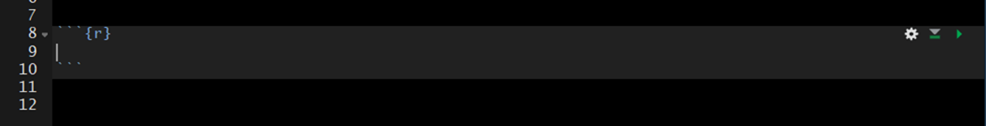
Inside the code chunk you can write and run R-code. If you print the output of your R-code it will appear below the code chunk in the source pane and the printed output will appear in the final compiled document. This is useful for producing figures and tables.
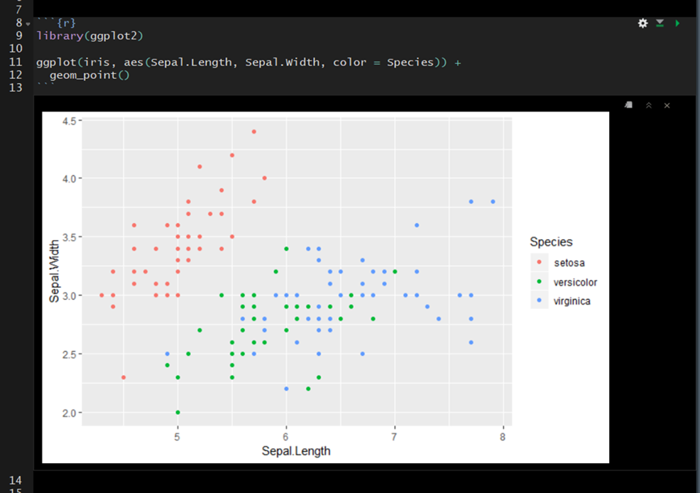
On the far right of the code chunk you will see three buttons.
- The cog makes it easy to specify code chunk options– discussed below.
- The middle button will execute all code chunks prior to a given function (
Ctrl + Alt + P) - The far right button will execute all of the code in a code chunk.
100.18.2 Shortcuts
You will want to learn these ASAP.
Ctrl + Alt + I- Insert a new code chunkCtrl + Enter- Run the line of code your cursor is onCtrl + Alt + R- Run all of the code in the documentCtrl + Alt + P- Run all code chunks above your cursorCtrl + Shift + F10- Restart R
100.18.3 Options
There are a number of code chunk options that can be specified in the code chunk header to modify how the code chunk is rendered while kniting. These options will not be visible in the rendered document– even if you choose not to hide the code chunks in your rendered document.
A comprehensive list of chunk options can be found here: https://yihui.org/knitr/options/
100.18.3.1 name
Best practice is to include a short and unique name within each code chunk header. This will be especially beneficial if you need to troubleshoot an error in your document as you will be able to track the source of the error down by code chunk name. The “name” is not specified as an argument within the header; it is simply separated from the “r” by a space. This is exemplified in the image below on line 9 where “addition” is supplied as the name of the code chunk ({r addition}).
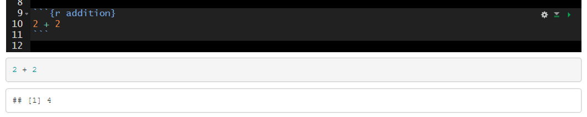
100.18.3.2 echo
A logical value (true or false) indicating if the code chunk should be visible in the rendered document. By default the code chunk will be visible upon knitting (echo=true). To hide a specific code chunk set echo to “false” (echo=false).
Include the code chunk in the rendered document with echo=true. 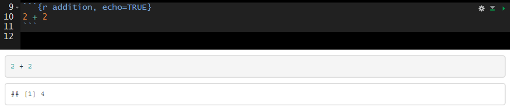
Exclude the code chunk in the rendered document with echo=false. 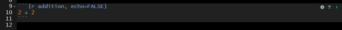
100.18.3.3 fig.width, fig.height, and fig.cap
The fig.width and fig.height options allow you to control the size of the figure generated from a given code chunk. fig.cap provides the ability to add a caption below the figure generated from a given code chunk.
Here is an example of the plot output form a code chunk. 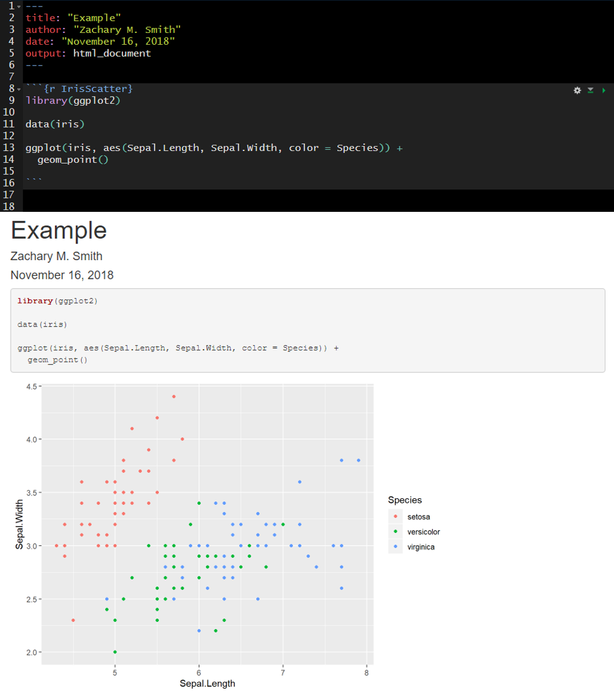
Here I have specified fig.width, fig.height, and fig.cap. Notice that plot dimensions have changed from the previous image and a caption has been added to the bottom of the figure. 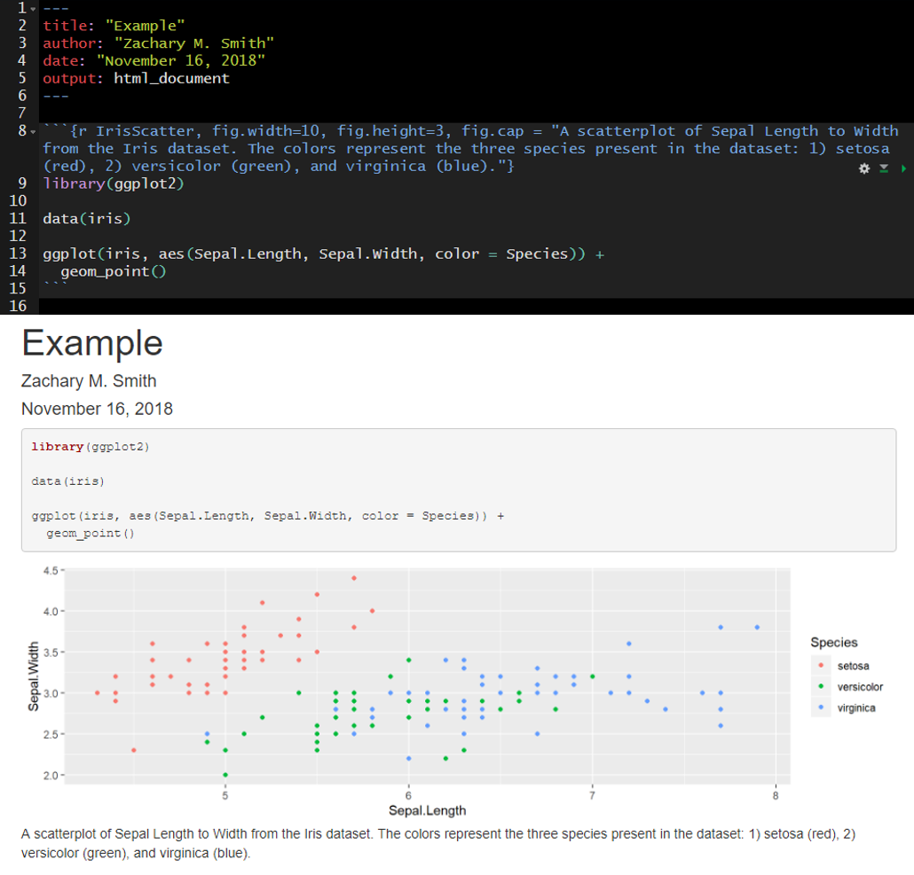
In many cases, you will want the captions to be numbered and you will want this to occur automatically. To this you will first need to install the package bookdown (install.packages("bookdown")). Specify in the YAML header that the output should be “html_document2” from the bookdown package (output: bookdown::html_document2). When you render the document the figures will now be automatically numbered by the order they appear in the document. To cross reference a figure by name in the text use \@ref(fig:figure_name). Using the example from the figure below, you might write “In \@ref(fig:IrisScatter) we can see that the species setosoa tend to have shorter sepal lengths than the other two species.” For more information visit https://bookdown.org/yihui/rmarkdown-cookbook/figure-number.html. 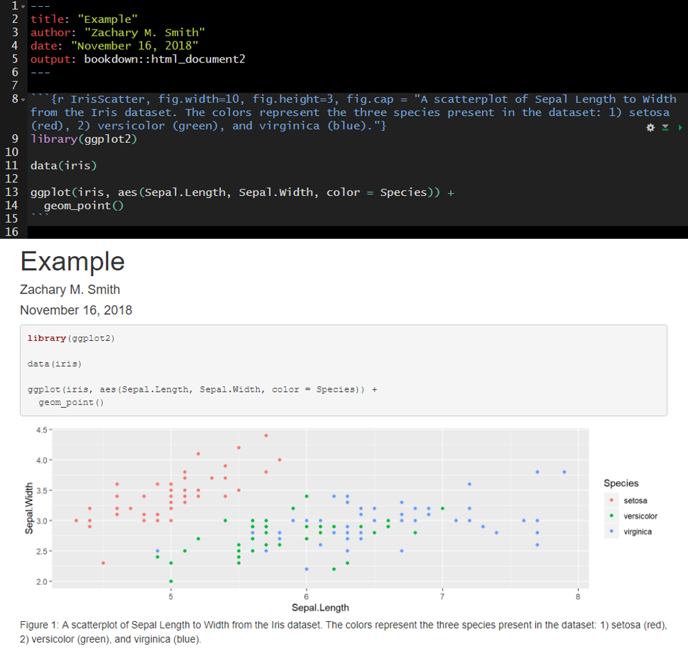
100.18.3.4 message and warning
Using message=FALSE and/or warning=FALSE will suppress messages and warnings preventing them from printing in the rendered document. Warning: Suppress these messages/warnings at your own risk. Without these messages/warnings you may make it very difficult to track down any issues in your code.
An example of messages that are produced with the default message=TRUE. 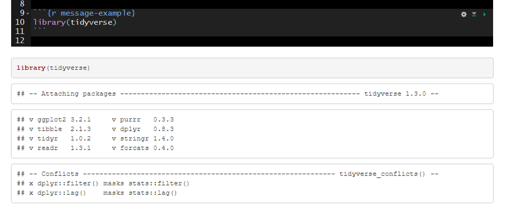
The messages above can be suppressed by setting message=FALSE in the code chunk header. 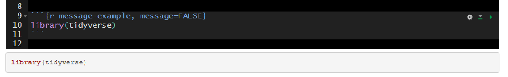
100.18.3.5 include
Code chunk headers with include=FALSE will be ignored when the document is rendered. This can be useful during document development. For example, you may have a code chunk producing an error that prevents you from rendering the rest of your document or you may be questioning the need to keep a given code chunk. include=FALSE will exclude the code from the rendered document without deleting the code entirely from the .Rmd file.
The default is include=TRUE. In the example below, include is not altered from the default and therefore all of the code chunks are present in the rendered document. 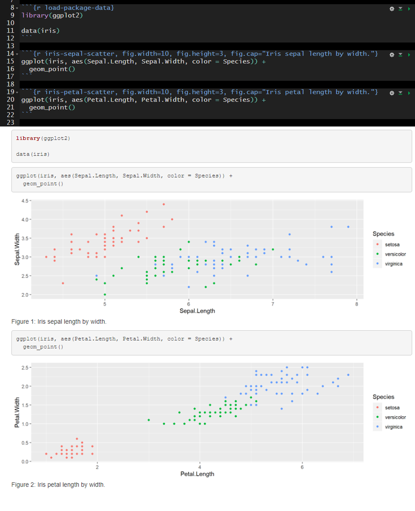
In the example below I added include=FALSE to the header of the second code chunk named “iris-sepal-scatter.” The second code chunk is excluded from the rendered document. 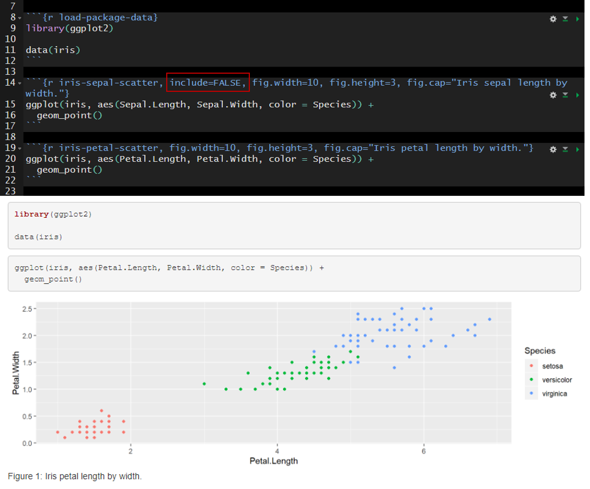
100.18.3.6 Setting Global Options
It can be helpful to establish global options to produce a standard format throughout the document. You can set this with the knitr function opts_chunk$set(). For instance, you may want to set a standard dimensions for figures produced by code chunks throughout your document. In the code chunk below, you can see that I set fig.width to 8 and fig.height to 4.
The options specified in opts_chunk$set() become the default when rendering the document. However, you still have the ability to overwrite these options for specific code chunks. Building off of the previous example, you may find that one out of ten of your plots is not aesthetically pleasing with fig.width = 8 and fig.height = 4. You could specify in the code chunk producing that plot that you want to set fig.width = 6 and fig.height = 6, for example.
100.19 Inline Code
Inline code enables you to insert R code into your document to dynamically updated portions of your text.
To insert inline code you need to encompass your R code within: 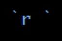.
For example, you could write:
Which would render to: The mean sepal length found in the iris data set is 5.8433333.
I frequently use inline code to make my YAML header date update to the date the document was last rendered.
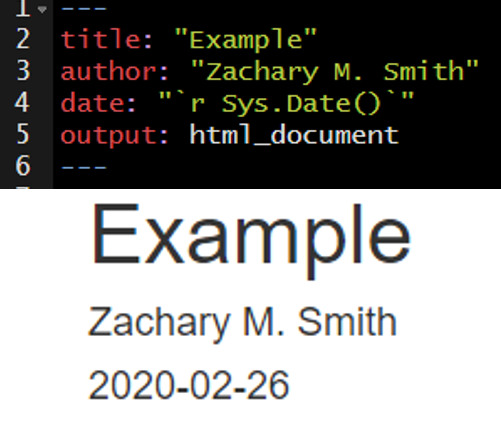
You can reformat the date using the format() function, as depicted in the image below. 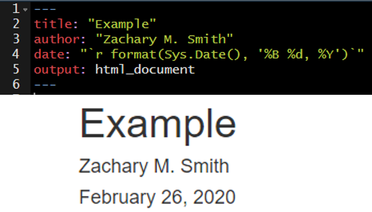
100.20 Your Turn (Part 1)
The point of this exercise is to get you familiar with code chunks and inline code, NOT to test your R knowledge; therefore, I have included the necessary code below each task.
Add a code chunk using Ctrl + Alt + i to import the example data set.
read.csv(file = file.path("data", "zms_thesis_metrics.csv"), stringsAsFactors = FALSE)Add a name to this code chunk header and all subsequent code chunk headers.
Add plain text description above the code chunk.
Add the following unordered list describing the contents of the imported data.
unique_id(character) unique sample IDlake(character) lake code: caz = Cazenovia lake, onon = Onondaga, and ot = Otiscolat(numeric) latitude of sampling locationlong(numeric) longitude of sampling locationsubstrate_size_d50(numeric) median particle size from pebble countconductivity(numeric) specific conductivity (µS/cm)richness(numeric) taxonomic richnessshannon(numeric) Shannon-Wiener diversity index valuespct_ephemeroptera(numeric) relative abundance of Ephemeroptera taxapct_amphipoda(numeric) relative abundance of Amphipoda taxapct_diptera(numeric) relative abundance of Diptera taxadom_1(numeric) relative abundance of the most dominant taxon observed in each sample
Add a code chunk to import the tidyverse packages.
library(tidyverse)- Add plain text description above the code chunk.
- Add
message=FALSEto the code chunk header to prevent the package start-up messages
Add a code chunk below
libary(tidyverse)to preprocess lake name (lake) associated with each sample.
df_thesis <- df_thesis %>%
mutate(
lake = case_when(
lake %in% "caz" ~ "Cazenovia",
lake %in% "onon" ~ "Onondaga",
lake %in% "ot" ~ "Otisco",
TRUE ~ "ERROR"
),
lake = factor(lake, levels = c(
"Onondaga",
"Otisco",
"Cazenovia"
))
)Add a code chunk just below the YAML header to specify global code chunk options
- specify
fig.widthandfig.height - in the header specify
echo=FALSEto hide this code chunk– your reader does not need to see this
- specify
Add a code chunk to generate a scatter plot.
- Add a caption
Add a code chunk generate a boxplot.
- Modify the figure size
- Add a caption
Add a brief interpretation of the figures into the “Conclusions” section.
Bonus: Try using the cog at the top right of the code chunk to update a code chunks options.
100.21 Interactive Features
Interactive tables and figures are a great way to make your document more interesting and can be very useful for data exploration. I will warn you that if you use these features too frequently your document will become cluttered and will likely load and run slowly.
100.21.1 DT
The DT package enables you and your readers to interact with tables in your document. You can filter and sort the table to view data that you are most interested in exploring or understanding.
For more information visit https://rstudio.github.io/DT/
100.21.2 Plotly
Plotly makes it easy to create interactive figures. Some of the most useful features are the ability to…
- rollover figure objects and see a pop-up information related to specific features
- Zoom-in and zoom-out
- take a picture of the figure
For more information visit: https://plot.ly/ggplot2/
I generally use plotly in conjunction with ggplot2. The plotly function, ggplotly(), makes it simple to convert ggplot2 figures to interactive plotly figures.
100.21.3 Leaflet
Leaflet is a great resource for creating interactive maps with minimal amount of coding.
For more information visit: https://rstudio.github.io/leaflet/
library(leaflet)
data("quakes")
leaflet(
data = quakes,
options = leafletOptions(
minZoom = 4,
maxZoom = 18
)
) %>%
addTiles() %>%
addCircleMarkers(~long, ~lat,
fillOpacity = 0.75,
stroke = FALSE,
popup = paste(
"Sample ID:", quakes$unique_id, "<br/>",
"Magnitude:", quakes$mag, "<br/>",
"Latitude:", quakes$lat, "<br/>",
"Longitude:", quakes$long
)
)Another neat feature is the ability to cluster points to better visualize density. You can do this by setting clusterOptions = markerClusterOptions().
library(leaflet)
data("quakes")
leaflet(
data = quakes,
options = leafletOptions(
minZoom = 4,
maxZoom = 18
)
) %>%
addTiles() %>%
addCircleMarkers(~long, ~lat,
fillOpacity = 0.75,
stroke = FALSE,
popup = paste(
"Sample ID:", quakes$unique_id, "<br/>",
"Magnitude:", quakes$mag, "<br/>",
"Latitude:", quakes$lat, "<br/>",
"Longitude:", quakes$long
),
clusterOptions = markerClusterOptions()
)100.22 Your Turn (Part 2)
Add a code chunk below the “Preproccessing” header and add the following DT code
- add this link (https://rstudio.github.io/DT/) to your description above the code chunk to describe where you can find more information on DT
Add a code chunk below the “Study Area” header and add the following leaflet code
- add this link (https://rstudio.github.io/leaflet/) to your description above the code chunk to describe where you can find more information on leaflet
library(leaflet) pal <- colorFactor(c("#619Cff", "#F8766D", "#00BA38"), domain = c("Cazenovia", "Onondaga", "Otisco") ) leaflet( data = df_thesis, options = leafletOptions( minZoom = 7, maxZoom = 13 ) ) %>% addTiles() %>% addCircleMarkers(~long, ~lat, fillOpacity = 0.75, fillColor = ~ pal(lake), stroke = FALSE, popup = paste( "Sample ID:", df_thesis$unique_id, "<br/>", "Lake:", df_thesis$lake, "<br/>", "Latitude:", df_thesis$lat, "<br/>", "Longitude:", df_thesis$long ) )Edit the scatter plot code chunk to make the figure interactive with plotly
add this link (https://plot.ly/ggplot2/) to your description above the code chunk
play around with the interactive plot and the tools provided at the top right of the plot
- For example, you can zoom in, click on points to get more information, take a snapshot of the current plot, etc.